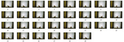
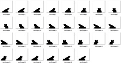
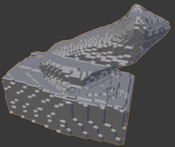

A YouTube short shows the overall fuctionning of the scanner https://www.youtube.com/shorts/9kxT4gUFv1E
This project was a collaboration of Ulysse Durand, Loïc Thomas, Gabin Jobert–Rollin and Yann Prost.
It was in the context of the Science of Engineering project part of the baccalaureate in 12th grade in 2018-2019.
A wooden box with a rotating platform was build. The object to scan was placed on the rotating platform, a focal lens with a light source sent parallel light rays on the object and its shadow was cast on a screen recorded by a webcam. In the end, the shadows of the object under different angles were processed to rebuild the 3d object.
Two approches were used to rebuild the 3d object
There is a 3d grid of voxels, at each shadow of the object, voxels out of the shadow are removed
In the end the mesh is constructed with the Marching Cubes algorithm (completed in 2019).
It is an approximation of the real shape
The code is here, written in C++.
Here the real intersection of the shadowed areas rotated with their respective angles is computed.
For each layer (y=constant) multipolygons of the shadows at the different angles are intersected.
To reconstruct the mesh from the layer, the horizontal faces are the symmetrical difference of the multipolygons of adjacent layers, and the vertical faces are extrusions of the layers
The code is here, written in Python.
To generate artificial images for the programs, use the Processing program in the
generate_input folder
You can find a summary document here.
Thanks to Yann PROST, Loïc Thomas and Gabin JOBERT–ROLIN for engineering and building the concrete scanner, making the acquisition of the images and processing the images.
The object’s shadow :

The input of the scanner3dV1:

The output of scanner3dV1:

With a different input given to scanner3dV2:
The output of scanner3dV2: